This document continues directly from the previous guide on zImage decompression.
At that point, __enter_kernel in the compressed head.S transferred control
to stext — the very first instruction of arch/arm/kernel/head.S in the
uncompressed vmlinux.
This document covers everything that happens from that moment — CPU running
at physical 0x40208000, MMU completely off — all the way to the first line
of C code in start_kernel() in init/main.c.
|
Prerequisite: Debugging Linux Boot Process — the companion document covering the zImage build pipeline and self-decompression stage. Reference: How the ARM32 kernel starts — Linus Walleij’s in-depth article that this document draws from and expands. Source: |
1. Handoff Point — Where We Came From
The previous document ended with __enter_kernel in the compressed bootstrap
loader (arch/arm/boot/compressed/head.S) executing:
__enter_kernel:
mov r0, #0 @ r0 must be 0
mov r1, r7 @ restore MachID saved at zImage entry
mov r2, r8 @ restore DTB pointer saved at zImage entry
mov pc, r4 @ jump to stext at ZRELADDR = 0x40208000At the instant pc = 0x40208000, the CPU state is:
| Register | Value | Meaning |
|---|---|---|
|
|
ARM boot ABI — must be zero |
|
|
Machine type ID (ignored by device-tree kernels) |
|
|
Physical address of Device Tree Blob (DTB) |
|
|
|
MMU |
OFF |
No virtual memory — every address is physical |
Caches |
OFF |
I-cache and D-cache disabled |
CPSR |
SVC mode |
IRQ and FIQ masked |
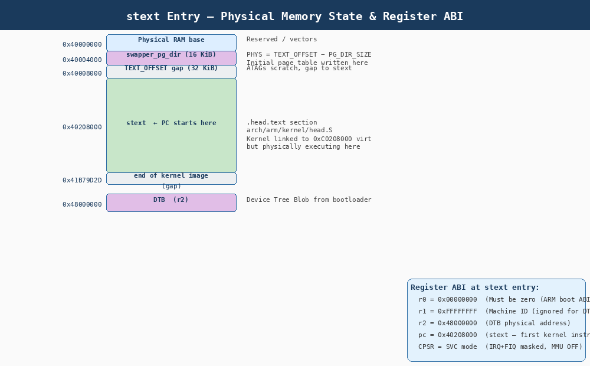
The key difference between this head.S and the compressed head.S is that
this code was linked to execute at a virtual address (typically 0xC0208000)
but is physically executing at 0x40208000. The earliest code must therefore
be written as position-independent assembly — it cannot use any linked address
until it has set up the MMU.
2. The Complete Startup Flow
Before diving into each phase, here is the complete sequence from stext to
start_kernel():
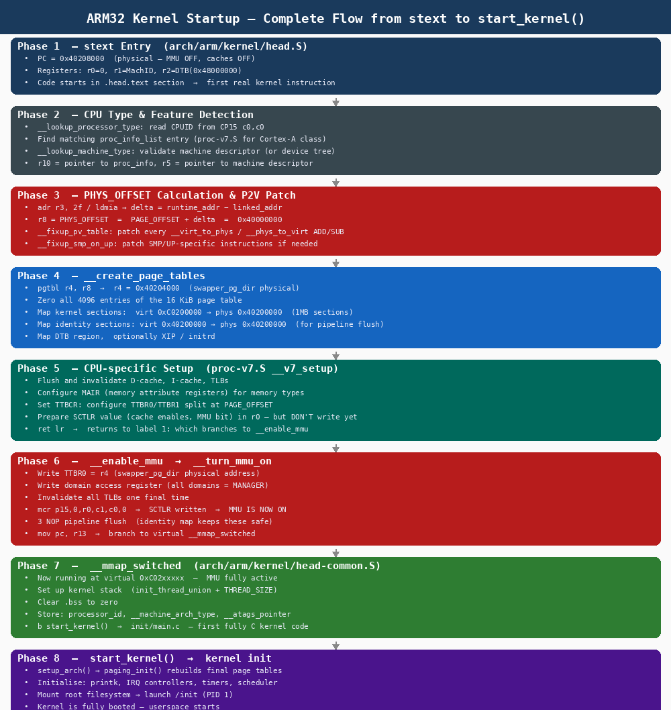
| Phase | Symbol | Purpose |
|---|---|---|
1 |
|
Entry point, initial register setup |
2 |
|
Identify CPU, find |
3 |
|
Calculate |
4 |
|
Build initial section mappings in |
5 |
|
CPU-specific cache/TLB setup, prepare SCTLR |
6 |
|
Activate MMU, flush pipeline |
7 |
|
Stack setup, BSS clear, branch to C |
8 |
|
First fully C kernel code |
3. Virtual Memory Split — Where Will the Kernel Live?
Before examining the assembly, we must understand the virtual address space
layout that governs every decision in head.S.
3.1. PAGE_OFFSET — The Kernel/User Split
The kernel and userspace share the same 32-bit virtual address space.
PAGE_OFFSET defines the boundary:
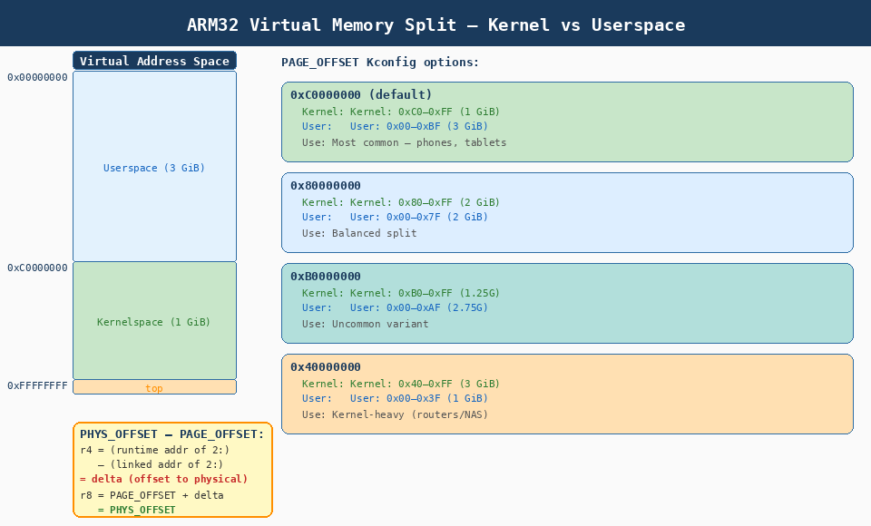
config PAGE_OFFSET
hex
default 0x40000000 if VMSPLIT_1G # kernel-heavy (routers, NAS)
default 0x80000000 if VMSPLIT_2G # balanced split
default 0xB0000000 if VMSPLIT_3G_OPT
default 0xC0000000 # default — user-heavy (phones, tablets)The overwhelming majority of ARM Linux systems use PAGE_OFFSET = 0xC0000000,
giving:
-
Userspace:
0x00000000–0xBFFFFFFF(3 GiB) — per-process virtual memory -
Kernel space:
0xC0000000–0xFFFFFFFF(1 GiB) — always-mapped kernel memory
The kernel is always mapped in every process’s page table. When a userspace process makes a system call, the CPU simply switches privilege level — no page table swap is needed because the kernel was already present in the upper 1 GiB. This makes kernel entry extremely fast.
3.2. KERNEL_RAM_VADDR — Where stext Is Linked
KERNEL_RAM_VADDR = PAGE_OFFSET + TEXT_OFFSET
= 0xC0000000 + 0x208000
= 0xC0208000 ← virtual address to which the kernel is linkedThe kernel binary was compiled and linked assuming it will execute at
0xC0208000. But right now, with the MMU off, it is physically at 0x40208000.
This is the fundamental tension that the early startup code must resolve.
4. Phase 1: stext — CPU and Feature Detection
4.1. Entry Conditions Check
head.S begins with checks for two advanced features:
ENTRY(stext)
THUMB( adr r9, BSYM(1f) ) @ Thumb-2 interworking
ARM( mov r9, r9 ) @ no-op in ARM mode
mrc p15, 0, r9, c0, c0 @ get processor ID (CPUID)
bl __lookup_processor_type @ find proc_info in proc-v7.S etc.
movs r10, r5 @ r10 = proc_info ptr (0 = not found)
beq __error_p @ BUG if processor not supported!4.2. __lookup_processor_type
This function reads the CPU ID register (CP15 c0) and walks the proc_info_list
table embedded in the kernel to find the correct processor descriptor:
__lookup_processor_type:
adr r3, __lookup_processor_type_data
ldmia r3, {r4-r6}
sub r3, r3, r4 @ get offset between runtime and link
add r5, r5, r3 @ adjust __proc_info_begin to physical
add r6, r6, r3 @ adjust __proc_info_end to physical
1: ldmia r5, {r3, r4} @ load value/mask pair from proc_info
and r4, r4, r9 @ mask CPU ID
teq r3, r4 @ does it match?
beq 2f @ yes → found it
add r5, r5, #PROC_INFO_SZ
cmp r5, r6
blo 1b
mov r5, #0 @ not found
2: ret lrThe matching entry (for Cortex-A15 in our QEMU session) is in
arch/arm/mm/proc-v7.S and contains:
| Field | Meaning |
|---|---|
|
CPUID match value for Cortex-A15 |
|
CPUID mask |
|
Function pointer for CPU-specific initialization |
|
Cache management function pointers |
|
TLB operation function pointers |
|
User memory access function pointers |
|
Cache operation function pointers |
5. Phase 2: Calculating PHYS_OFFSET and P2V Patching
This is one of the most important and subtle sections of head.S. The kernel
must determine where in physical RAM it is actually running without being able
to rely on any compile-time constant.
5.1. The Problem
The kernel was linked to execute at 0xC0208000 (virtual). It is physically
running at 0x40208000. The difference is 0x80000000. But this offset is
not known at compile time — the same kernel image must boot on hardware where
RAM starts at 0x10000000, 0x40000000, 0x80000000, or anywhere else.
5.2. The Solution — Runtime Delta Calculation
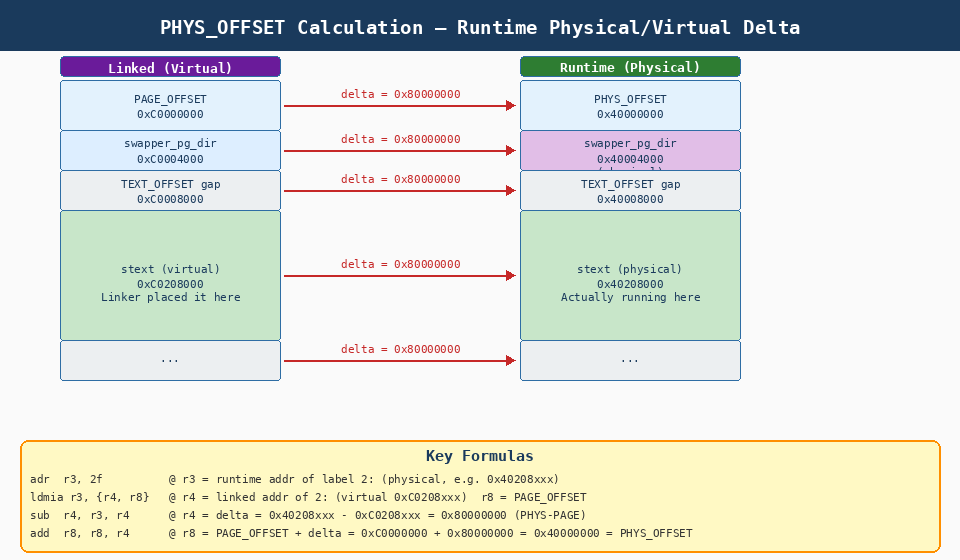
adr r3, 2f @ r3 = RUNTIME addr of label 2: (physical, e.g. 0x40208xxx)
ldmia r3, {r4, r8} @ r4 = LINKED addr of 2: (virtual 0xC0208xxx)
@ r8 = PAGE_OFFSET (e.g. 0xC0000000)
sub r4, r3, r4 @ r4 = delta = runtime − linked
@ = 0x40208xxx − 0xC0208xxx
@ = 0x80000000 (PHYS_OFFSET − PAGE_OFFSET)
add r8, r8, r4 @ r8 = PAGE_OFFSET + delta
@ = 0xC0000000 + 0x80000000 = 0x40000000
@ = PHYS_OFFSET ✓
2: .long . @ compile-time address of this label (virtual)
.long PAGE_OFFSET @ compile-time PAGE_OFFSET constant|
The |
5.3. CONFIG_ARM_PATCH_PHYS_VIRT — Patching Every P2V Conversion
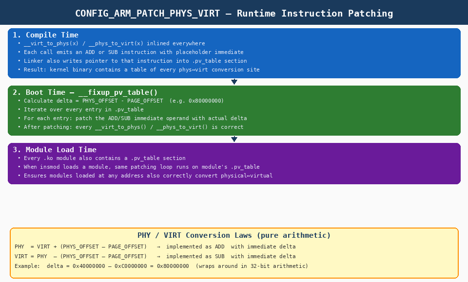
The kernel contains thousands of calls to virt_to_phys() and
phys_to_virt(). Each one is compiled as an ARM ADD or SUB with an
immediate operand that encodes the P2V offset. At link time this immediate
is a placeholder. At boot, __fixup_pv_table patches every single one:
__fixup_pv_table:
adr r0, 1f
ldmia r0, {r3-r7}
mvn ip, #0
subs r3, r0, r3 @ compute offset to physical memory
add r4, r4, r3 @ adjust __pv_table_begin to physical addr
add r5, r5, r3 @ adjust __pv_table_end to physical addr
add r6, r6, r3 @ adjust __pv_phys_pfn_offset
add r7, r7, r3 @ adjust __pv_offset
mov r0, r8, lsr #PAGE_SHIFT @ PFN of PHYS_OFFSET
str r0, [r6] @ save to __pv_phys_pfn_offset (used by MM later)
...
b __fixup_a_pv_table @ loop: patch every ADD/SUB in .pv_table
1: .long .
.long __pv_table_begin
.long __pv_table_end
.long __pv_phys_pfn_offset
.long __pv_offsetAfter this loop, every virt_to_phys(x) in the kernel correctly computes
x + (PHYS_OFFSET - PAGE_OFFSET) and every phys_to_virt(x) correctly
computes x - (PHYS_OFFSET - PAGE_OFFSET).
| Symbol | Before Patching | After Patching (our session) |
|---|---|---|
|
placeholder |
|
|
placeholder |
|
|
undefined |
|
|
undefined |
|
|
This patching is also performed every time a kernel module ( |
6. Phase 3: __create_page_tables — Building the Initial MMU Mappings
Before the MMU can be turned on, the kernel must create a minimal page table that maps:
-
The kernel code itself at its virtual address (
0xC0208000+) -
An identity mapping covering the few instructions immediately after MMU activation (required for pipeline flush safety)
-
The DTB region (so the kernel can read it after MMU is on)
6.1. swapper_pg_dir — The Initial Page Table Location
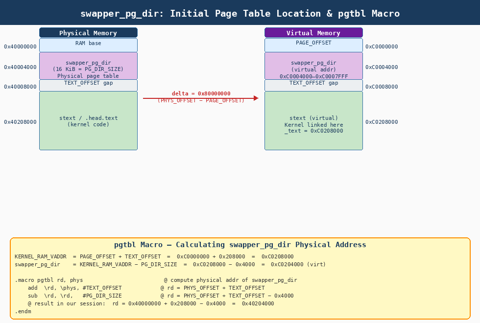
__create_page_tables:
pgtbl r4, r8 @ r4 = physical address of swapper_pg_dir
@ The pgtbl macro computes:
@ r4 = PHYS_OFFSET + TEXT_OFFSET - PG_DIR_SIZE
@ = 0x40000000 + 0x208000 - 0x4000
@ = 0x40204000
@
@ In virtual memory this will be at:
@ swapper_pg_dir = PAGE_OFFSET + TEXT_OFFSET - PG_DIR_SIZE
@ = 0xC0000000 + 0x208000 - 0x4000
@ = 0xC0204000| Symbol | Value | Meaning |
|---|---|---|
|
|
Physical RAM base (computed in Phase 2) |
|
|
Offset of |
|
|
Classic MMU: 16 KiB; LPAE: 20 KiB ( |
|
|
Where initial page table is written |
|
|
Where it will appear after MMU on |
6.2. Step 1: Zero the Entire Page Table
mov r0, r4 @ r0 = start of page table (0x40204000)
mov r3, #0
add r6, r0, #PG_DIR_SIZE @ r6 = end of page table
1: str r3, [r0], #4 @ zero one word, advance
str r3, [r0], #4
str r3, [r0], #4
str r3, [r0], #4
teq r0, r6
bne 1b @ loop until all 4096 entries zeroedThis unrolled 4-word loop clears all 16,384 bytes (4,096 × 4-byte entries) of
swapper_pg_dir to zero — meaning "no mapping" for every virtual address.
6.3. ARM32 Page Table Format — Section Descriptors
The initial page table uses section mappings — each entry covers exactly 1 MiB. This means:
-
The 16 KiB page table has 4,096 entries (16,384 bytes ÷ 4 bytes/entry)
-
Each entry describes 1 MiB of virtual address space
-
4,096 × 1 MiB = 4 GiB — the entire 32-bit address space
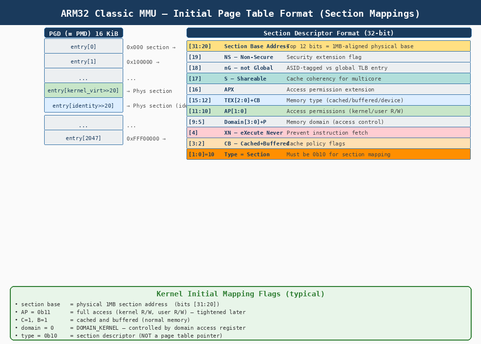
31 20 19 18 17 16 15 12 11 10 9 5 4 3 2 1 0
┌─────────────┬──┬──┬──┬──┬──────┬────┬───┬────┬──┬────┬────┐
│ Base[31:20] │NS│nG│ S│APX│TEX+CB│AP │DOM│ P │XN│ CB │ 10 │
└─────────────┴──┴──┴──┴──┴──────┴────┴───┴────┴──┴────┴────┘
↑
Must be 0b10
= Section typeFor the initial kernel mapping the entry is built as:
orr r6, r7, #PMD_TYPE_SECT | PMD_SECT_AP_WRITE | PMD_SECT_AP_READ
orr r6, r6, #PMD_FLAGS_CACHED @ C=1 B=1
@ r6 is now the template section descriptor for kernel sections
@ bits [31:20] will be filled with the physical base address6.4. Step 2: Map Kernel Sections (Virtual → Physical)
@ r8 = PHYS_OFFSET (0x40000000)
@ r10 = proc_info pointer (from __lookup_processor_type)
@ r7 = section descriptor flags
adr r0, __turn_mmu_on_loc
ldmia r0, {r3, r5, r6}
sub r0, r0, r3 @ r0 = physical offset
@ Map the kernel sections:
@ virtual 0xC0200000–0xC02FFFFF → physical 0x40200000–0x402FFFFF
add r0, r4, #(KERNEL_RAM_VADDR >> 18) @ PGD index for 0xC0200000
orr r3, r7, r8, lsr #(SECTION_SHIFT - PMD_ORDER)
add r3, r3, #( PHYS_OFFSET >> SECTION_SHIFT) << PMD_ORDER
1: str r3, [r0], #4 @ write section descriptor
add r3, r3, #1 << SECTION_SHIFT @ next 1MB
cmp r0, r6
bls 1b @ loop for all kernel sections6.5. Step 3: Map Identity Sections (Physical = Virtual)
@ Map identical: virtual 0x40200000 → physical 0x40200000
@ This keeps PC valid immediately after "mcr p15,0,r0,c1,c0,0" (MMU on)
adr r0, __turn_mmu_on
mov r0, r0, lsr #SECTION_SHIFT @ which 1MB section are we in?
orr r3, r7, r0, lsl #SECTION_SHIFT @ section descriptor: phys = virt
add r0, r4, r0, lsl #PMD_ORDER @ PGD index for identity entry
str r3, [r0] @ write identity section descriptor6.6. Step 4: Map the DTB
@ Map 1 or 2 sections covering the DTB (passed in r2 = 0x48000000)
mov r3, r2, lsr #SECTION_SHIFT @ DTB section index
add r0, r4, r3, lsl #PMD_ORDER @ PGD index for DTB virtual addr
rsb r3, r3, #(PAGE_OFFSET >> (SECTION_SHIFT - PMD_ORDER))
orr r3, r7, r3, lsl #SECTION_SHIFT @ DTB section descriptor
orr r3, r3, #PMD_SECT_XN @ mark execute-never
str r3, [r0], #4 @ first section
add r3, r3, #1 << SECTION_SHIFT
str r3, [r0] @ second section (DTB may span two)6.7. The Two Key Mappings
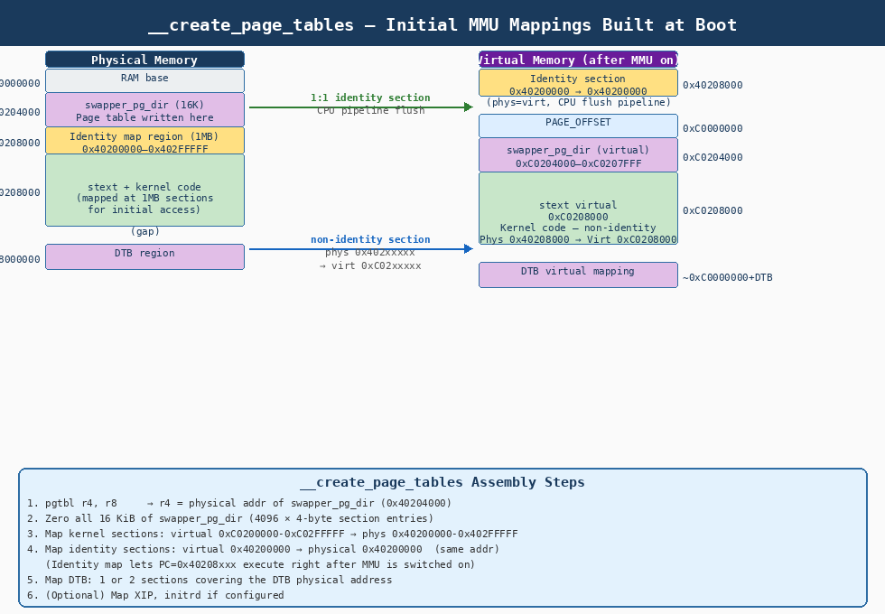
| Mapping Type | Virtual Range | Physical Range | Purpose |
|---|---|---|---|
Kernel sections |
|
|
Where kernel will execute after MMU on (non-identity) |
Identity sections |
|
|
Pipeline flush safety — covers |
DTB sections |
|
|
Kernel can read DTB in virtual memory after boot |
6.8. Linux Page Table Terminology (ARM32)
| Linux Name | ARM Hardware | Meaning |
|---|---|---|
PGD (Page Global Directory) |
First-level table (L1) |
16 KiB; 4,096 entries; each covers 1 MiB. This IS the |
PMD (Page Middle Directory) |
Same as PGD on classic MMU |
For classic ARM32: PGD and PMD are folded — same structure. On LPAE: PMD is a separate 4-entry table (64-bit entries, 2 MiB per section). |
PTE (Page Table Entry) |
Second-level entries |
Used for 4 KiB page mappings. The initial boot table does NOT use these — it uses section descriptors entirely. |
P4D, PUD |
Not used on ARM32 |
These Linux levels are folded (unused) on ARM32. |
|
The initial page table uses section descriptors exclusively — no second-level
page tables are created. Each 4-byte entry in |
7. Phase 4: CPU-Specific Setup — proc-v7.S
Before enabling the MMU, the CPU must be configured. stext calls the
per-CPU initialization function via the proc_info pointer found in Phase 1:
ldr r12, [r10, #PROCINFO_INITFUNC] @ r12 = __v7_setup offset
add r12, r12, r10 @ r12 = physical addr of __v7_setup
ret r12 @ jump, lr = addr of label 1:
@ (which branches to __enable_mmu)
1: b __enable_mmuFor Cortex-A class CPUs, __v7_setup in arch/arm/mm/proc-v7.S performs:
__v7_setup:
adr r12, __v7_setup_stack @ save registers to local stack
stmia r12, {r0-r5, r7, r9, r11, lr}
bl v7_flush_dcache_all @ clean and invalidate all D-cache
ldmia r12, {r0-r5, r7, r9, r11, lr}
mov r10, #0
mcr p15, 0, r10, c7, c5, 0 @ invalidate I-cache + BTB
dsb
mcr p15, 0, r10, c8, c7, 0 @ invalidate I+D TLBs (all)
@ Configure TTBCR — split at PAGE_OFFSET
@ For PAGE_OFFSET = 0xC0000000: T1SZ = 2 (TTBR1 covers top 1 GiB)
mrc p15, 0, r10, c2, c0, 2 @ read current TTBCR
orr r10, r10, #TTB_FLAGS_SMP
mcr p15, 0, r10, c2, c0, 2 @ write TTBCR
@ Prepare SCTLR value in r0 — cache enables, branch prediction, MMU bit
@ The M bit (MMU enable) is SET in this value but the register is NOT
@ written yet — that happens in __turn_mmu_on
mrc p15, 0, r0, c1, c0, 0 @ read current SCTLR
orr r0, r0, #CR_M @ set MMU enable bit
orr r0, r0, #CR_C @ set D-cache enable bit
orr r0, r0, #CR_I @ set I-cache enable bit
ret lr @ return to label 1: → __enable_mmu8. Phase 5: __enable_mmu — Turning On the MMU
This is the most critical section of the entire boot sequence. One wrong instruction here causes an immediate fault with no way to recover.
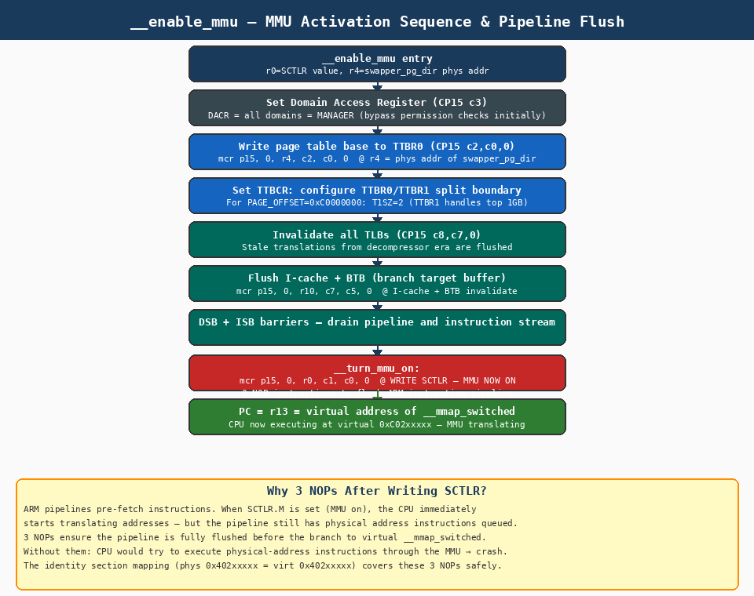
8.1. The Complete __enable_mmu Sequence
__enable_mmu:
@ r0 = SCTLR value to write (MMU+cache bits set)
@ r4 = physical address of swapper_pg_dir (0x40204000)
@ r13 = virtual address of __mmap_switched (to jump to after MMU on)
#ifndef CONFIG_CPU_ICACHE_DISABLE
orr r0, r0, #CR_I @ enable I-cache
#endif
@ Set Domain Access Register: all domains = MANAGER
@ (bypasses permission checks during initial boot)
mov r5, #(domain_val(DOMAIN_USER, DOMAIN_MANAGER) | \
domain_val(DOMAIN_KERNEL, DOMAIN_MANAGER) | \
domain_val(DOMAIN_TABLE, DOMAIN_MANAGER) | \
domain_val(DOMAIN_IO, DOMAIN_CLIENT))
mcr p15, 0, r5, c3, c0, 0 @ write DACR
@ Load page table base address into TTBR0
mcr p15, 0, r4, c2, c0, 0 @ TTBR0 = swapper_pg_dir physical addr
@ Final TLB invalidation
mov r5, #0
mcr p15, 0, r5, c8, c7, 0 @ invalidate all I+D TLBs
mcr p15, 0, r5, c7, c5, 6 @ invalidate BTB
b __turn_mmu_on
__turn_mmu_on:
mov r0, r0
instr_sync @ ISB — instruction synchronisation barrier
mcr p15, 0, r0, c1, c0, 0 @ *** WRITE SCTLR — MMU IS NOW ON ***
mrc p15, 0, r3, c0, c0, 0 @ read MIDR (pipeline flush — 3 instructions)
mov r3, r3 @ nop
mov r3, r3 @ nop
mov pc, r13 @ branch to virtual __mmap_switchedDump first level pagetable: (gdb) x/240 0x40204000 0x40204000: 0x00000c12 0x00100c12 0x00200c12 0x00300c12 0x40204010: 0x00400c12 0x00500c12 0x00600c12 0x00700c12 0x40204020: 0x00800c12 0x00900c12 0x00a00c12 0x00b00c12 0x40204030: 0x00c00c12 0x00d00c12 0x00e00c12 0x00f00c12 0x40204040: 0x01000c12 0x01100c12 0x01200c12 0x01300c12 0x40204050: 0x01400c12 0x01500c12 0x01600c12 0x01700c12 0x40204060: 0x01800c12 0x01900c12 0x01a00c12 0x01b00c12 0x40204070: 0x01c00c12 0x01d00c12 0x01e00c12 0x01f00c12 0x40204080: 0x02000c12 0x02100c12 0x02200c12 0x02300c12 0x40204090: 0x02400c12 0x02500c12 0x02600c12 0x02700c12 0x402040a0: 0x02800c12 0x02900c12 0x02a00c12 0x02b00c12 0x402040b0: 0x02c00c12 0x02d00c12 0x02e00c12 0x02f00c12 0x402040c0: 0x03000c12 0x03100c12 0x03200c12 0x03300c12 0x402040d0: 0x03400c12 0x03500c12 0x03600c12 0x03700c12 0x402040e0: 0x03800c12 0x03900c12 0x03a00c12 0x03b00c12 0x402040f0: 0x03c00c12 0x03d00c12 0x03e00c12 0x03f00c12 0x40204100: 0x04000c12 0x04100c12 0x04200c12 0x04300c12 0x40204110: 0x04400c12 0x04500c12 0x04600c12 0x04700c12 0x40204120: 0x04800c12 0x04900c12 0x04a00c12 0x04b00c12 0x40204130: 0x04c00c12 0x04d00c12 0x04e00c12 0x04f00c12 0x40204140: 0x05000c12 0x05100c12 0x05200c12 0x05300c12 0x40204150: 0x05400c12 0x05500c12 0x05600c12 0x05700c12 0x40204160: 0x05800c12 0x05900c12 0x05a00c12 0x05b00c12 0x40204170: 0x05c00c12 0x05d00c12 0x05e00c12 0x05f00c12 0x40204180: 0x06000c12 0x06100c12 0x06200c12 0x06300c12 0x40204190: 0x06400c12 0x06500c12 0x06600c12 0x06700c12 0x402041a0: 0x06800c12 0x06900c12 0x06a00c12 0x06b00c12 0x402041b0: 0x06c00c12 0x06d00c12 0x06e00c12 0x06f00c12 0x402041c0: 0x07000c12 0x07100c12 0x07200c12 0x07300c12 0x402041d0: 0x07400c12 0x07500c12 0x07600c12 0x07700c12 0x402041e0: 0x07800c12 0x07900c12 0x07a00c12 0x07b00c12 0x402041f0: 0x07c00c12 0x07d00c12 0x07e00c12 0x07f00c12 0x40204200: 0x08000c12 0x08100c12 0x08200c12 0x08300c12 0x40204210: 0x08400c12 0x08500c12 0x08600c12 0x08700c12 0x40204220: 0x08800c12 0x08900c12 0x08a00c12 0x08b00c12 0x40204230: 0x08c00c12 0x08d00c12 0x08e00c12 0x08f00c12 0x40204240: 0x09000c12 0x09100c12 0x09200c12 0x09300c12 0x40204250: 0x09400c12 0x09500c12 0x09600c12 0x09700c12 0x40204260: 0x09800c12 0x09900c12 0x09a00c12 0x09b00c12 0x40204270: 0x09c00c12 0x09d00c12 0x09e00c12 0x09f00c12 0x40204280: 0x0a000c12 0x0a100c12 0x0a200c12 0x0a300c12 0x40204290: 0x0a400c12 0x0a500c12 0x0a600c12 0x0a700c12 0x402042a0: 0x0a800c12 0x0a900c12 0x0aa00c12 0x0ab00c12 0x402042b0: 0x0ac00c12 0x0ad00c12 0x0ae00c12 0x0af00c12 0x402042c0: 0x0b000c12 0x0b100c12 0x0b200c12 0x0b300c12 0x402042d0: 0x0b400c12 0x0b500c12 0x0b600c12 0x0b700c12 0x402042e0: 0x0b800c12 0x0b900c12 0x0ba00c12 0x0bb00c12 0x402042f0: 0x0bc00c12 0x0bd00c12 0x0be00c12 0x0bf00c12 0x40204300: 0x0c000c12 0x0c100c12 0x0c200c12 0x0c300c12 0x40204310: 0x0c400c12 0x0c500c12 0x0c600c12 0x0c700c12 0x40204320: 0x0c800c12 0x0c900c12 0x0ca00c12 0x0cb00c12 0x40204330: 0x0cc00c12 0x0cd00c12 0x0ce00c12 0x0cf00c12 0x40204340: 0x0d000c12 0x0d100c12 0x0d200c12 0x0d300c12 --Type <RET> for more, q to quit, c to continue without paging-- 0x40204350: 0x0d400c12 0x0d500c12 0x0d600c12 0x0d700c12 0x40204360: 0x0d800c12 0x0d900c12 0x0da00c12 0x0db00c12 0x40204370: 0x0dc00c12 0x0dd00c12 0x0de00c12 0x0df00c12 0x40204380: 0x0e000c12 0x0e100c12 0x0e200c12 0x0e300c12 0x40204390: 0x0e400c12 0x0e500c12 0x0e600c12 0x0e700c12 0x402043a0: 0x0e800c12 0x0e900c12 0x0ea00c12 0x0eb00c12 0x402043b0: 0x0ec00c12 0x0ed00c12 0x0ee00c12 0x0ef00c12
8.2. CP15 Registers Written
| Register | CP15 Address | What is Written |
|---|---|---|
DACR (Domain Access Control Register) |
|
All domains set to MANAGER — bypasses permission checking during boot |
TTBR0 (Translation Table Base Register 0) |
|
Physical address of |
TTBCR (Translation Table Base Control Register) |
|
TTBR0/TTBR1 split configuration (set during |
SCTLR (System Control Register) |
|
MMU enable ( |
8.3. Why the 3 NOPs Are Critical — The Identity Mapping Bridge
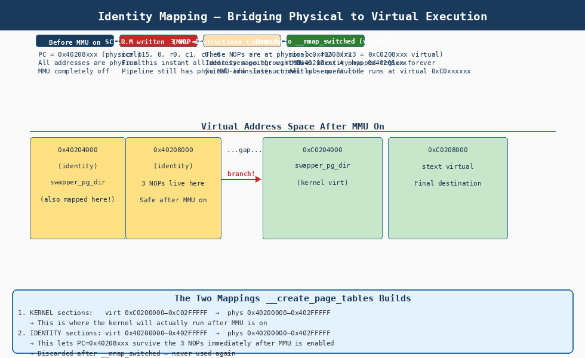
When mcr p15, 0, r0, c1, c0, 0 writes the SCTLR:
-
The MMU is activated instantly
-
But the ARM pipeline has already fetched the next few instructions using physical addresses
-
Those physical addresses (
0x40208xxx) must be valid virtual addresses too
This is exactly why __create_page_tables builds the identity mapping:
| Address | What Happens |
|---|---|
|
Identity-mapped: virt |
|
Kernel-mapped: virt |
|
The identity mapping covers only one 1 MiB section ( |
9. Phase 6: __mmap_switched — Final C Runtime and start_kernel()
After mov pc, r13, the CPU is executing at a virtual address for the first
time. We are now in arch/arm/kernel/head-common.S:
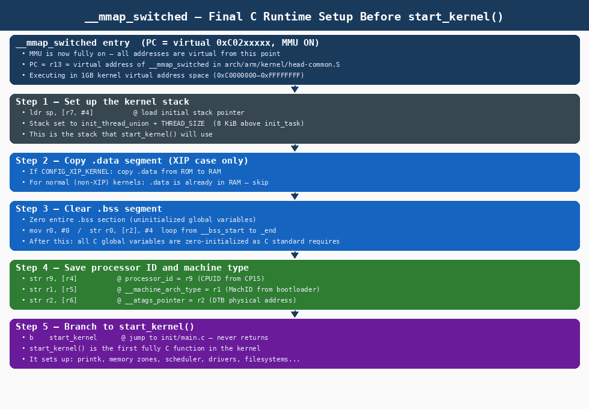
__mmap_switched:
@ At this point:
@ MMU ON — all addresses are virtual
@ PC = 0xC0208xxx (virtual)
@ r0 = 0, r1 = MachID, r2 = DTB physical addr, r9 = CPUID
adr r3, __mmap_switched_data @ r3 = physical addr of data table
ldmia r3!, {r4, r5, r6, r7} @ load: __data_loc, _sdata, __bss_start, _end
@ Step 1: Copy .data if XIP kernel (ROM → RAM)
cmp r4, r5 @ __data_loc == _sdata? (no copy needed if same)
1: cmpne r5, r6 @ .data end reached?
ldrne fp, [r4], #4
strne fp, [r5], #4
bne 1b
@ Step 2: Zero .bss segment
mov fp, #0
1: cmp r6, r7
strcc fp, [r6], #4 @ zero one word
bcc 1b
@ Step 3: Load stack pointer
ldmia r3, {r4, r5, r6, r7, sp}
@ Step 4: Save processor information for setup_arch()
str r9, [r4] @ processor_id = CPUID
str r1, [r5] @ __machine_arch_type = MachID
str r2, [r6] @ __atags_pointer = DTB phys addr
cmp r7, #0 @ any further fixups?
bicne ip, ip, #PSR_ENDIAN_SET
mcrne p15, 0, ip, c1, c0, 0 @ set endianness if needed
@ Step 5: Branch to start_kernel() — NEVER RETURNS
b start_kernel9.1. Data Table __mmap_switched_data
.align 2
.type __mmap_switched_data, %object
__mmap_switched_data:
.long __data_loc @ source of .data (ROM for XIP, same as _sdata otherwise)
.long _sdata @ virtual start of .data
.long __bss_start @ start of .bss
.long _end @ end of .bss
.long processor_id @ &processor_id global variable
.long __machine_arch_type @ &__machine_arch_type
.long __atags_pointer @ &__atags_pointer (DTB physical addr)
.long cr_alignment @ &cr_alignment
.long init_thread_union + THREAD_SIZE @ initial kernel stack pointer| Symbol | Content after __mmap_switched |
|---|---|
|
CPUID from |
|
Machine ID from |
|
Physical address of DTB ( |
|
|
10. Virtual Memory Layout After MMU On
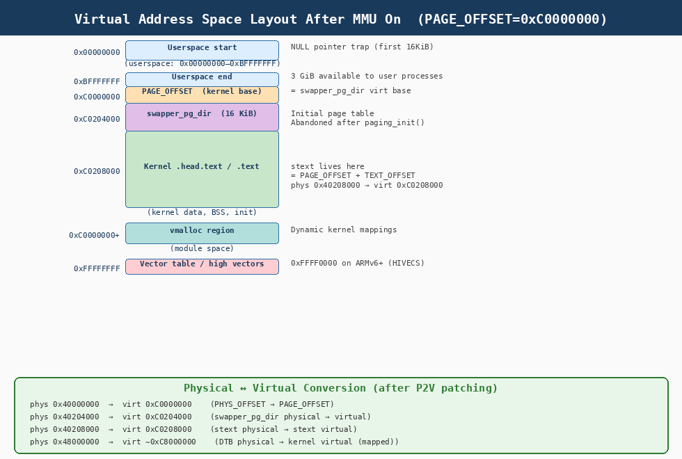
| Virtual Address | Region | Contents / Notes |
|---|---|---|
|
Userspace base |
NULL pointer trap — first 16 KiB causes a fault on access |
|
Userspace (3 GiB) |
Per-process virtual memory — fully isolated between processes |
|
|
Kernel space starts here — always mapped, always present |
|
|
Initial page table — written during |
|
|
First kernel instruction — |
|
Kernel image |
|
|
above kernel image |
Dynamic kernel memory mappings (modules, ioremap, etc.) |
|
High vectors |
ARM exception vectors (on ARMv6+ with |
10.1. Physical ↔ Virtual Translation After Boot
After P2V patching, every address conversion in the kernel uses:
| Direction | Formula | Example |
|---|---|---|
Physical → Virtual |
|
|
Virtual → Physical |
|
|
Shorthand |
|
11. What Happens in start_kernel()
start_kernel() in init/main.c is the first C function. It inherits the
sparse initial page table. Its first job is to replace it:

| Function Call | Purpose |
|---|---|
|
Architecture setup — calls |
|
Rebuilds all page tables — discards |
|
Allocate per-CPU data |
|
Set up memory zones (ZONE_DMA, ZONE_NORMAL, etc.) |
|
Install final exception vector table |
|
Initialize memory allocator |
|
Initialize the process scheduler |
|
Set up IRQ controllers |
|
Initialize system timers |
|
Launch kernel thread PID 1 ( |
|
Once |
12. Debugging the Kernel Startup with GDB
12.1. Loading vmlinux Symbols
To trace from stext onwards, load the uncompressed vmlinux at TEXT_OFFSET:
(gdb) target remote :1234
(gdb) add-symbol-file arch/arm/boot/compressed/vmlinux 0x40010000
(gdb) add-symbol-file vmlinux 0x40208000
(gdb) hbreak stext
(gdb) continue
12.2. Key Breakpoints for head.S Tracing
| Breakpoint | What to Inspect |
|---|---|
|
Entry state: |
|
CPU identification — |
|
Before: all zero; After: inspect |
|
|
|
Last instruction before MMU on — single-step carefully |
|
First virtual-mode instruction — |
|
First C code — |
12.3. Inspecting the Page Table
After __create_page_tables completes, inspect swapper_pg_dir directly:
(gdb) x/16wx 0x40204000 @ first 16 entries (0x00000000–0x0FFFFFFF virtual)
0x40204000: 0x00000000 0x00000000 ... @ all zero (unmapped)
(gdb) x/wx 0x40204000 + 4*(0x402>>1) @ entry for identity 0x40200000
0x40205008: 0x40200c1e @ phys base 0x402, type=section(0b10), C=1,B=1,AP=11
(gdb) x/wx 0x40204000 + 4*(0xC02>>1) @ entry for kernel 0xC0200000
(gdb) @ calculate: (0xC0200000 >> 20) * 4 = 0xC02 * 4 / 0x100 = offset into PGDDecoding a section descriptor entry 0x40200c1e:
0x40200c1e = 0100 0000 0010 0000 0000 1100 0001 1110
↑ ↑ ↑ ↑ ↑
[31:20]=0x402 [11:10]=AP=11 [C=1][B=1] [1:0]=0b10=Section
13. Summary: Key Addresses and Symbols
| Symbol | Address | Space | Notes |
|---|---|---|---|
|
|
Physical |
Entry point from decompressor |
|
|
Virtual |
Linked address — active after MMU on |
|
|
Virtual |
Kernel/user split boundary |
|
|
Physical |
Physical RAM base (computed at runtime) |
|
|
— |
Gap between RAM base and |
|
|
Physical |
Written by |
|
|
Virtual |
Accessible after MMU on |
|
|
— |
16 KiB — classic MMU; |
|
|
Physical |
Identity-mapped — safe post-MMU |
|
|
Virtual |
First virtual-mode code |
|
|
Physical |
Passed in |
P2V delta |
|
— |
|
| Phase | Symbol | Action | Key Registers |
|---|---|---|---|
1 |
|
Entry, CPU detection, |
|
2 |
|
Compute |
|
3 |
|
Build |
|
4 |
|
Flush caches+TLBs, configure TTBCR, prepare SCTLR value |
|
5 |
|
Write DACR, TTBR0; final TLB flush; call |
|
6 |
|
Write SCTLR (MMU ON); 3 NOPs; |
|
7 |
|
Set stack, clear BSS, save IDs, |
|
8 |
|
|
— (C code) |